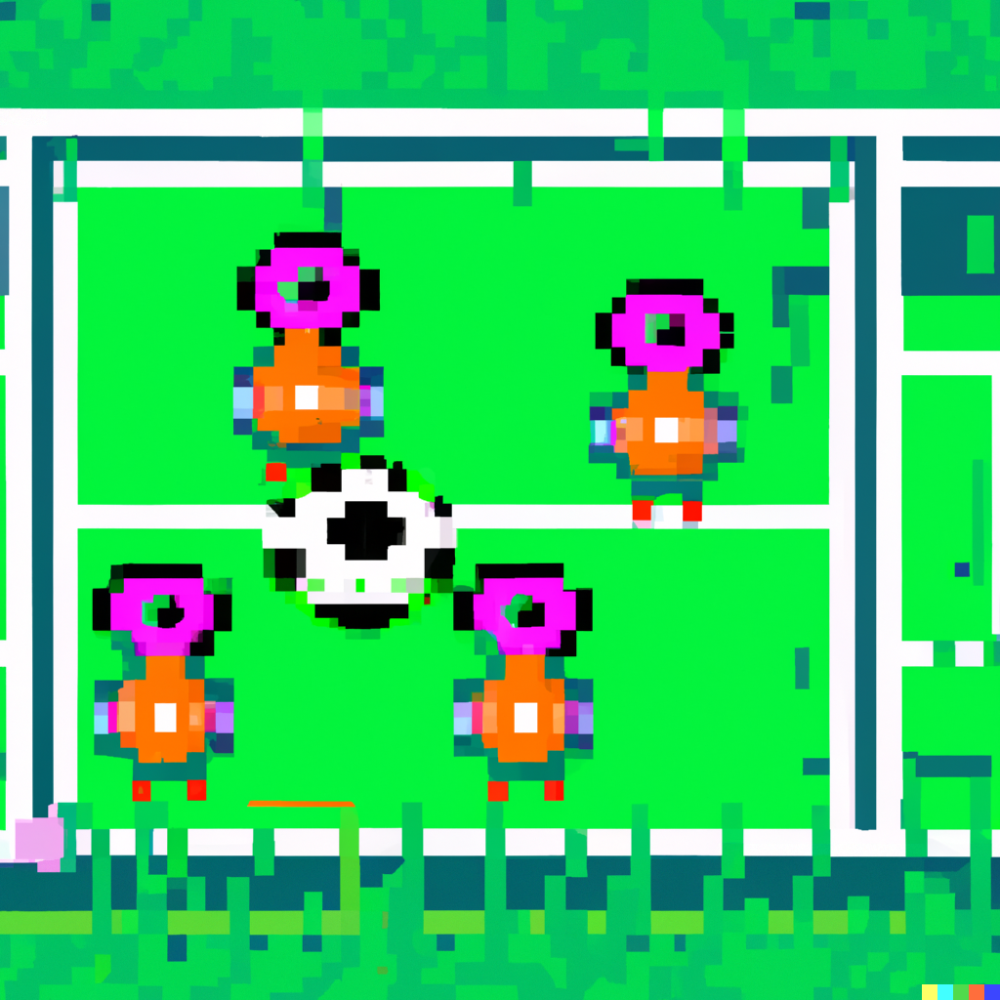
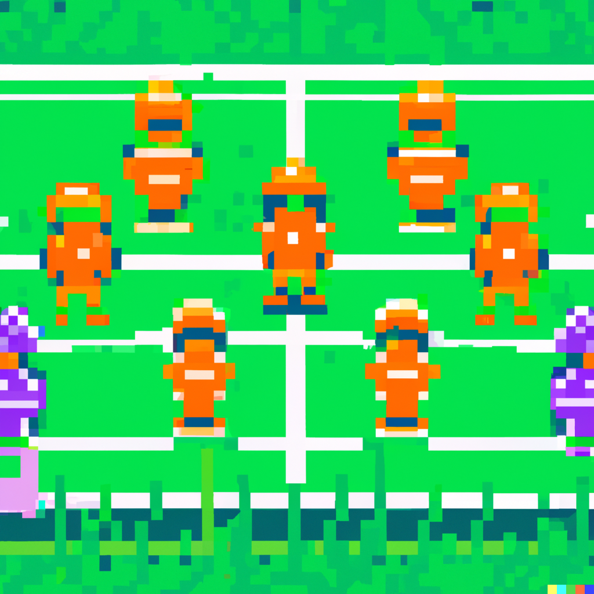

Pri spojení pojmov robotika a
umelá inteligencia (AI) sa nám
zväčša vynorí predstava o
humanoidných robotoch z
nejedného filmu.
Ak však odhliadneme od
Hollywoodu, AI a robotika
predstavujú dve odlišné
disciplíny, avšak môžu byť
navzájom prospešné a môžu
koexistovať.
Cieľom projektu je
preskúmať možnosti využívania prvkov umelej inteligencie
v prostredí
na simuláciu robotov
Webots.
Zameriame sa na
vytvorenie vlastného
inteligentného robota a
simulačného prostredia, v
ktorom bude tento robot vykonávať rôzne definované úlohy. Inými
slovami,
naprogramujeme
vlastnú riadiacu jednotku, ktorá sa
naučí komunikovať s prostredím.
Riešenie navrhneme, odsimulujeme a otestujeme v prostredí Webots,
pričom riadiacu
jednotku naprogramujeme v
Pythone.
Pre učenie použijeme
reinforcement learning, vďaka ktorému
náš robot bude vedieť hrať
futbal a rozpoznávať spoluhráčov. Nakoniec týmto štýlom vytvoríme
inteligentné
futbalové tímy, schopné súperiť o góly.